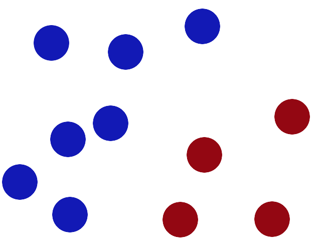
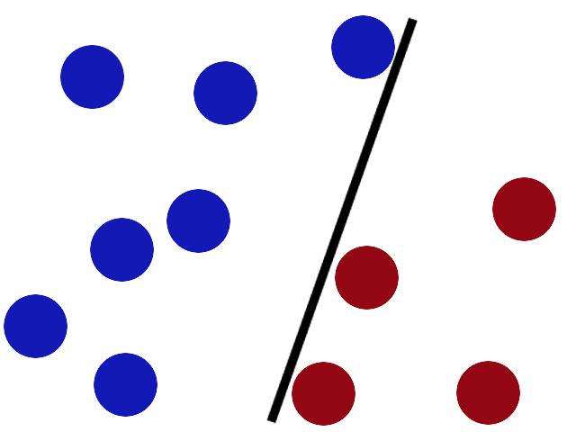
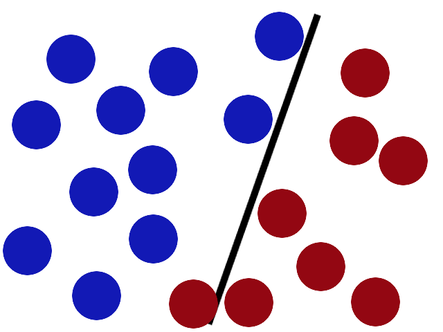
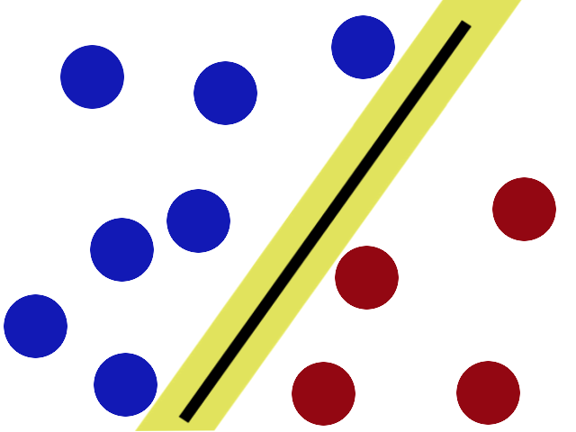
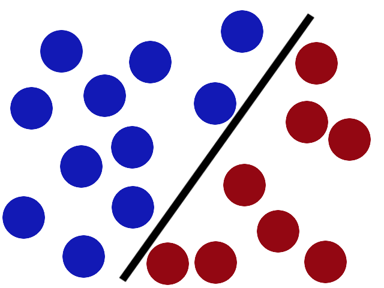
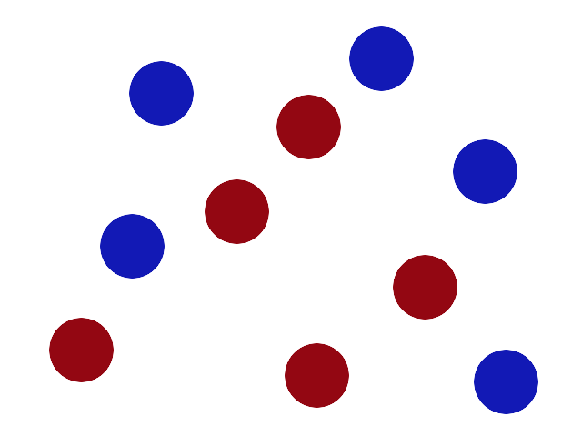
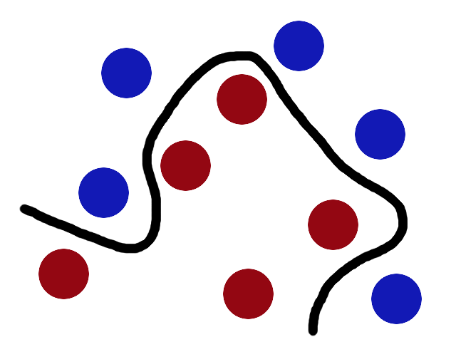
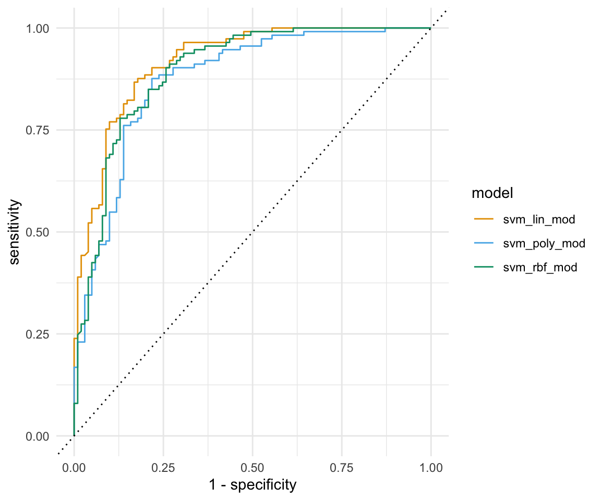

pacman::p_load(tidyverse, tidymodels, magrittr,
janitor, see, conflicted)
conflict_prefer("select", "dplyr")
conflict_prefer("filter", "dplyr")
conflict_prefer("mutate", "dplyr")
conflict_prefer("extract", "magrittr")
conflict_prefer("set_names", "magrittr")
##
set.seed(2025429)65 Support vector machines
Letzte Änderung am 28. September 2023 um 14:04:25
Wenn wir von Support Vector Machines (deu. Stützvektormethode, abk. SVM) schreiben, dann schreiben wir auch von einem heutzutage eher seltneren genutzen Algorithmus. Das hat weniger mit den Fähigkeiten des Algorithmus zu tun, als mit der Entscheidung, welche Art von SVM Algorithmus wir nutzen wollen. Daher gibt es wie immer sehr viel theoretische Literatur, aber sehr wenig praktische Anwendung. Der SVM Algorithmus lifert zwar eine Vorhersage, kann aber nicht mit einer Variablen Importance aufwarten. Auch kann der SVM nicht einen Cluster bilden. Am Ende ist der SVM Algorithmus also nur eine Möglichkeit eine gute Vorhersage zu machen. Eigentlich das was wir wollen, aber andere Algorithmen können dann immer noch einen Tick mehr.
65.1 Genutzte R Pakete
Wir wollen folgende R Pakete in diesem Kapitel nutzen.
Am Ende des Kapitels findest du nochmal den gesamten R Code in einem Rutsch zum selber durchführen oder aber kopieren.
65.2 Daten
In diesem Kapitel wollen wir uns auch auf einen echten Datensatz konzentrieren. Wir nutzen daher einmal den Gummibärchendatensatz. Als unser Label und daher als unser Outcome nehmen wir das Geschlecht gender. Dabei wollen wir dann die weiblichen Studierenden vorhersagen. Im Weiteren nehmen wir nur die Spalte Geschlecht sowie als Prädiktoren die Spalten most_liked, age, semester, und height.
gummi_tbl <- read_excel("data/gummibears.xlsx") %>%
mutate(gender = as_factor(gender),
most_liked = as_factor(most_liked)) %>%
select(gender, most_liked, age, semester, height) %>%
drop_na(gender)Wir dürfen keine fehlenden Werte in den Daten haben. Wir können für die Prädiktoren später die fehlenden Werte imputieren. Aber wir können keine Labels imputieren. Daher entfernen wir alle Beobachtungen, die ein NA in der Variable gender haben. Wir haben dann insgesamt \(n = 548\) Beobachtungen vorliegen. In Tabelle 61.5 sehen wir nochmal die Auswahl des Datensatzes in gekürzter Form.
| gender | most_liked | age | semester | height |
|---|---|---|---|---|
| m | lightred | 35 | 10 | 193 |
| w | yellow | 21 | 6 | 159 |
| w | white | 21 | 6 | 159 |
| w | white | 36 | 10 | 180 |
| m | white | 22 | 3 | 180 |
| m | white | NA | NA | NA |
| … | … | … | … | … |
| w | darkred | 20 | 1 | 173 |
| w | white | 22 | 1 | 175 |
| w | darkred | NA | 1 | NA |
| m | white | 21 | 1 | 192 |
| m | darkred | 22 | 1 | 183 |
| w | green | 23 | 1 | 162 |
Unsere Fragestellung ist damit, können wir anhand unserer Prädiktoren männliche von weiblichen Studierenden unterscheiden und damit auch klassifizieren? Um die Klassifikation mit Entscheidungsbäumen rechnen zu können brauchen wir wie bei allen anderen Algorithmen auch einen Trainings- und Testdatensatz. Wir splitten dafür unsere Daten in einer 3 zu 4 Verhältnis in einen Traingsdatensatz sowie einen Testdatensatz auf.
Im maschinellen Lernen sind alle Datensätze, die weniger als tausend Beobachtungen vorliegen haben, klein.
gummi_data_split <- initial_split(gummi_tbl, prop = 3/4)Wir speichern uns jetzt den Trainings- und Testdatensatz jeweils separat ab. Die weiteren Modellschritte laufen alle auf dem Traingsdatensatz, wie nutzen dann erst ganz zum Schluß einmal den Testdatensatz um zu schauen, wie gut unsere trainiertes Modell auf den neuen Testdaten funktioniert.
gummi_train_data <- training(gummi_data_split)
gummi_test_data <- testing(gummi_data_split)Nachdem wir die Daten vorbereitet haben, müssen wir noch das Rezept mit den Vorverabreitungsschritten definieren. Wir schreiben, dass wir das Geschlecht gender als unser Label haben wollen. Daneben nehmen wir alle anderen Spalten als Prädiktoren mit in unser Modell, das machen wir dann mit dem . Symbol. Da wir noch fehlende Werte in unseren Prädiktoren haben, imputieren wir noch die numerischen Variablen mit der Mittelwertsimputation und die nominalen fehlenden Werte mit Entscheidungsbäumen. Dann müssen wir noch alle numerischen Variablen normalisieren und alle nominalen Variablen dummykodieren. Am Ende werde ich nochmal alle Variablen entfernen, sollte die Varianz in einer Variable nahe der Null sein.
gummi_rec <- recipe(gender ~ ., data = gummi_train_data) %>%
step_impute_mean(all_numeric_predictors()) %>%
step_impute_bag(all_nominal_predictors()) %>%
step_range(all_numeric_predictors(), min = 0, max = 1) %>%
step_dummy(all_nominal_predictors()) %>%
step_nzv(all_predictors())
gummi_rec── Recipe ──────────────────────────────────────────────────────────────────────── Inputs Number of variables by roleoutcome: 1
predictor: 4── Operations • Mean imputation for: all_numeric_predictors()• Bagged tree imputation for: all_nominal_predictors()• Range scaling to [0,1] for: all_numeric_predictors()• Dummy variables from: all_nominal_predictors()• Sparse, unbalanced variable filter on: all_predictors()Alles in allem haben wir ein sehr kleines Modell. Wir haben ja nur ein Outcome und vier Prädiktoren.
65.3 Theoretischer Hintergrund
Der theoretische Hintergrund zu dem SVM Algorithmus ist sehr mathematisch. So mathematisch, dass wir hier daraus keinen tieferen Nutzen mehr ziehen. Hier geht es ja um die Anwendung des SVM Algorithmus und nicht um das tiefere mathematische Verständnis. Wie immer gibt es sehr viele Möglichkeiten sich tiefer mit der Mathematik hinter dem SVM Algorithmus zu beschäftigen. Hier wollen wir das nicht.
Es gibt wir immer ein schönes (mathematisches) Tutorial zu den Support vector machines. Von dort ist auch das Beispiel mit den farbigen Kugeln entnommen.
Daher wollen wir mal den SVM Algorithmus etwas anders verstehen. Wir nutzen wieder die Idee, dass wir farbige Punkte oder Bälle voneinander trennen wollen. Im Prinzip kannst du dir die Bälle in der Abbildung 65.1 genau so vorstellen. Wir haben dort sieben gesunde Personen als blaue Kugeln und vier kranke Personen als rote Kugeln, die wir trennen wollen.

In Abbildung 65.2 zeichnen wir eine Gerade, die die Patienten gut voneinander trennt. Auf der einen Seite der Geraden sind die sieben gesunden Patienten und auf der anderen Seite der Geraden die vier kranken Personen.

Nun kommt zu unserem Trainingsdatensatz ein Schwall neuer Patienten hinzu und wir ergänzen die Beobachtungen in der Abbildung 65.3. Wir haben immer noch unsere ursprüngliche Gerade, aber diese Gerade trennt die neuen Beobachtungen nicht mehr gut auf. Ein kranker Patient ist auf der falschen Seite der Geraden. Es gibt wahrscheinlich einen besseren Platz, um die Gerade jetzt zu platzieren.

In der Abbildung 65.4 sehen wir die Vorgegehensweise des SVM Algorithmus. Der SVM Algorithmus versucht die Gerade an der bestmöglichen Stelle zu platzieren, indem der Algorithmus auf beiden Seiten der Geraden einen möglichst großen Abstand einhalten.

Wenn wir jetzt in der Abbildung 65.5 wieder zu unserem angewachsenen Trainingsdaten zurückkehren, sehen wir, dass unsere Klassifikation der gesunden und kranken Beobachtungen gut funktioniert. Der SVM Algorithmus hat durch den optimierten Abstand der Geraden einen optimalen Klassifikator gefunden.

Nun gibt es aber neben der Geraden noch einen anderen Trick, den wir mit dem SVM Algorithmus durchführen können. Schauen wir uns dazu einmal die Abbildung 65.6 an. Wir sehen in dem neuen Trainingsdatensatz fünf gesunde und fünf kranke Beobachtungen. nur sind diese Beobachtungen nicht mehr so verteilt, dass wir die Beobachtungen mit einer Geraden trennen könnten. Hier kommt jetzt der Kerneltrick des SVM Algorithmus zu tragen.

Wir können mit keiner Geraden der Welt die Punkte voneinander trennen. Jetzt nutzen wir den Kerneltrick in Abbildung 65.7 um unsere 2-D Abbildung in eine 3-D Abbildung umzuwandeln. Jetzt können wir mit einer Ebene die Patienten voneinander trennen. Wir bringen also unsere Beobachtungen durch eine Transformation in eine andere Dimension und können in dieser Dimension die Beobachtungen mit einer Ebene trennen.

Wenn wir dann die Ebene wieder zurücktransfomieren erhalten wir eine kurvige Linie, die unsere Beobachtungen in Abbildung 65.8 voneinander trennt.

Das war jetzt eine sehr bildliche Darstellung des SVM Algorithmus. Aber im Prinzip ist das die Idee. Wir machen den Kernel Trick nur matematisch komplizierter und auch die Rücktransformation ist nicht simpel. Das müssen wir aber auch nicht selber für uns machen, denn dafür haben wir ja einen Computer. Das eigentliche Problem ist die Wahl des korrekten Kernels. Und das ist eigentlich auch die Qual der Wahl. Wir müssen vorab festlegen, welcher Kernel es sein soll. Und da geht dann das Tuning los.
65.4 SVM Algorithm
Leider ist es nicht so, dass wir eine SVM Funktion haben. Wir haben insgesamt drei Funktionen. Jede dieser Funktionen entspricht einem Kernel und muss getrennt voneinander einem Tuning unterzogen werden. Wir haben folgende Funktionen mit den entsprechenden Kernels zu Verfügung.
svm_linearheißt, wir nehmen einen linearen Zusammenhang an. Wir können die Beobachtungen mit einer einfachen Gerade voneinander trennen.svm_polyheißt, wir nehmen ein Polynom eines bestimmten Gerades und glauben, dass wir mit diesem Kernel die Beobachtungen voneinander trennen können.svm_rbf_modheißt, wir haben einen radialen Kernel und hoffen, dass wir mit einer radialen Funktion die Beobachtungen trennen können.
Und damit geht das Leid eigentlich schon los. Wir können gar nicht wissen, welcher der drei SVM Algorithmen am besten auf unsere Daten passt. Also müssen wir alle drei einemal anwenden. Dann müssten wir eigentlich auch alle drei Algorithmen einem Tuning unterziehen. Du siehst, es wird viel Arbeit. Wir lassen hier das Tuning weg und ich zeige dir, wie du mit der Funktion map() dir etwas Arbeit ersparen kannst.
Als erstes wollen wir den linearen Kernel einmal definieren. Wir haben hier zwei Parameter die wir einem Tuning unterziehen könnten.
svm_lin_mod <- svm_linear(cost = 1, margin = 0.1) %>%
set_engine("kernlab") %>%
set_mode("classification") Als zweites schauen wir uns den polynomilane Kernel an und setzen einmal den Grade des Polynomes auf vier. Einfach mal so aus dem Bauch raus um zu zeigen, was dann so passieren kann.
svm_poly_mod <- svm_poly(cost = 1, margin = 0.1, degree = 4) %>%
set_engine("kernlab") %>%
set_mode("classification") Als letztes schauen wir uns noch den radialen Kernel einmal an. Auch hier haben wir nur zwei Tuningparameter zu Verfügung.
svm_rbf_mod <- svm_rbf(cost = 1, margin = 0.1) %>%
set_engine("kernlab") %>%
set_mode("classification") Jetzt machen wir alles in einem Schritt. Was wir vorher in mehreren Schritten gemaht haben, machen wir jetzt auf einer Liste lst() in der die Modelle der drei Kernel definiert sind. Wir nutzen die Funktion map() um auf dieser Liste die Workflows mit dem Rezept der Gummibärchen zu initialisieren. Dann Pipen wir die Workflows weiter in die fit() Funktion und wollen dann danach auch gleich die Vorhersage auf dem Testdatensatz rechnen. Danach wählen wir dann auf allen Listen noch gender und die Vorhersagen als die pred-Spalten aus.
svm_aug_lst <- lst(svm_lin_mod,
svm_poly_mod,
svm_rbf_mod) %>%
map(~workflow(gummi_rec, .x)) %>%
map(~fit(.x, gummi_train_data)) %>%
map(~augment(.x, gummi_test_data)) %>%
map(~select(.x, gender, matches("pred"))) Setting default kernel parameters svm_aug_lst$svm_lin_mod
# A tibble: 137 × 4
gender .pred_class .pred_m .pred_w
<fct> <fct> <dbl> <dbl>
1 w w 0.0257 0.974
2 w w 0.0430 0.957
3 m m 0.820 0.180
4 w w 0.245 0.755
5 m m 0.808 0.192
6 m m 0.981 0.0187
7 m m 0.936 0.0641
8 m m 0.947 0.0532
9 m m 0.973 0.0265
10 m w 0.501 0.499
# ℹ 127 more rows
$svm_poly_mod
# A tibble: 137 × 4
gender .pred_class .pred_m .pred_w
<fct> <fct> <dbl> <dbl>
1 w w 0.483 0.517
2 w w 0.493 0.507
3 m m 0.509 0.491
4 w m 0.510 0.490
5 m m 0.511 0.489
6 m m 0.525 0.475
7 m m 0.516 0.484
8 m m 0.514 0.486
9 m m 0.511 0.489
10 m w 0.502 0.498
# ℹ 127 more rows
$svm_rbf_mod
# A tibble: 137 × 4
gender .pred_class .pred_m .pred_w
<fct> <fct> <dbl> <dbl>
1 w w 0.332 0.668
2 w w 0.0423 0.958
3 m m 0.882 0.118
4 w w 0.310 0.690
5 m m 0.881 0.119
6 m m 0.964 0.0356
7 m m 0.958 0.0421
8 m m 0.956 0.0441
9 m m 0.978 0.0224
10 m w 0.457 0.543
# ℹ 127 more rowsJetzt haben wir also alles als eine Liste vorliegen. Das macht uns dann die weitere Darstellung einfach. Wenn du einen Listeneintrag haben willst, dann kannst du auch mit der Funktion pluck() dir einen Eintrag nach dem Namen herausziehen. Wenn du den Listeneintrag $svm_rbf_mod willst, dann nutze pluck(svn_aug_lst, "svm_rbf_mod").
Kann ich auch eine Kreuzvalidierung und Tuning für die Support Vector Machines durchführen?
Ja, kannst du. Wenn du nur eine Kreuzvalidierung durchführen willst, findest du alles im Kapitel 63 für den \(k\)-NN Algorithmus. Du musst dort nur den Workflow ändern und schon kannst du alles auch auf den Support Vector Machine Algorithmus anwenden. Wenn du den Support Vector Machine Algorithmus auch tunen willst, dann schaue einfach nochmal im Kapitel 64.5 zum Tuning von xgboost rein.
Jetzt lassen wir uns auf der Liste der Vorhersagen nochmal für alle Kernel der SVM Algorithmen die Konfusionsmatrizen ausgeben.
svm_cm <- svm_aug_lst %>%
map(~conf_mat(.x, gender, .pred_class))
svm_cm$svm_lin_mod
Truth
Prediction m w
m 54 10
w 19 54
$svm_poly_mod
Truth
Prediction m w
m 48 21
w 25 43
$svm_rbf_mod
Truth
Prediction m w
m 54 12
w 19 52Das sieht doch recht gut aus. Nur unser Polynomerkernel hat anscheinend Probleme die Geschlechter gut voneinander aufzutrennen. Du siehst, hier muss eben auch ein Tuning her. Selber den Grad des Polynoms zu treffen das passt ist sehr schwer oder eigentlich nur mit Glück hinzukriegen.
Im folgenden Schritt müssen wir uns etwas strecken. Ich will nämlich die summary() Funktion auf die Konfusionsmatrizen anwenden und dann die drei Ausgaben in einem Datensatz zusammenführen. Wir haben dann die Metriknamen als eine Spalte und dann die drei Spalten für die Zahlenwerte der drei Methoden.
svm_cm %>%
map(summary) %>%
map(~select(.x, .metric, .estimate)) %>%
reduce(left_join, by = ".metric") %>%
set_names(c("metric", "linear", "poly", "radial")) %>%
mutate(across(where(is.numeric), round, 3))Warning: There was 1 warning in `mutate()`.
ℹ In argument: `across(where(is.numeric), round, 3)`.
Caused by warning:
! The `...` argument of `across()` is deprecated as of dplyr 1.1.0.
Supply arguments directly to `.fns` through an anonymous function instead.
# Previously
across(a:b, mean, na.rm = TRUE)
# Now
across(a:b, \(x) mean(x, na.rm = TRUE))# A tibble: 13 × 4
metric linear poly radial
<chr> <dbl> <dbl> <dbl>
1 accuracy 0.788 0.664 0.774
2 kap 0.578 0.328 0.549
3 sens 0.74 0.658 0.74
4 spec 0.844 0.672 0.812
5 ppv 0.844 0.696 0.818
6 npv 0.74 0.632 0.732
7 mcc 0.583 0.329 0.551
8 j_index 0.583 0.329 0.552
9 bal_accuracy 0.792 0.665 0.776
10 detection_prevalence 0.467 0.504 0.482
11 precision 0.844 0.696 0.818
12 recall 0.74 0.658 0.74
13 f_meas 0.788 0.676 0.777Wenn wir wieder auf unsere Accuracy als unser primäres Gütemaß schauen, dann sehen wir, dass wir hier ohne Tuning mit dem linearen Kernel am besten fahren würden. Auch sind die anderen Werte meistens für den linearen Kernel am besten. Daher würde ich mich hier für den linearen Kernel entscheiden. Die Frage wäre natürlich, ob die anderen Kernel mit einem Tuning nicht besser wären. Aber diese Frage lassen wir mal offen im Raum stehen.
Schauen wir uns in einem letzten Schritt noch die ROC Kurven für die drei Kernels an. Dafür müssen wir einen Datensatz aus der Liste bilden nachdem wir die Sensitivität und Spezifität für die drei Kernels in der Listenform berechnet haben. Wir können dafür die Funktion bind_rows() nutzen.
roc_tbl <- svm_aug_lst %>%
map(~roc_curve(.x, gender, .pred_w, event_level = "second")) %>%
bind_rows(.id = "model")Warning: Returning more (or less) than 1 row per `summarise()` group was deprecated in
dplyr 1.1.0.
ℹ Please use `reframe()` instead.
ℹ When switching from `summarise()` to `reframe()`, remember that `reframe()`
always returns an ungrouped data frame and adjust accordingly.
ℹ The deprecated feature was likely used in the yardstick package.
Please report the issue at <https://github.com/tidymodels/yardstick/issues>.In Abbildung 65.9 sehen wir die drei ROC Kurven für die drei Kernels. Wie zu erwarten war, ist der lineare Kernel der beste Kernel. Das hatten wir ja schon oben in der Zusammenfassung der Konfusionsmatrix gesehen. Auch hier zeigt sich sehr schön, wie schlecht dann unser polynominaler Kernel ist. Das war jetzt hier zur Demonstration, aber dennoch zeigt es wie wichtig ein gutes Tuning ist.
roc_tbl %>%
ggplot(aes(x = 1 - specificity, y = sensitivity, col = model)) +
theme_minimal() +
geom_path() +
geom_abline(lty = 3) +
scale_color_okabeito()
Damit wären wir auch schon am Ende des Kapitels über den SVM Algorithmus. Wie du schon merkst, müssen wir viel rechnen, wenn wir mit den SVM Kerneln was Vorhersagen wollen. Wenn wir den richtigen Kernel gefunden haben, dann können wir auch eine gute Vorhersage erreichen. Nun müssen auch diesen Kernel erstmal algorithmisch finden, dass heißt also viele Kernels ausprobieren. Und am Ende ist natürlich die Implementierung hier im genutzten R Paket parsnip nicht die Weisheit letzter Schluss. Es gibt noch sehr viel mehr R Pakete, die sich mit SVM Algorithmen beschäftigen. Aber das wäre dann eine Literatursuche für dich. Vorerst endet das Kapitel jetzt hier.